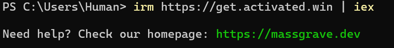
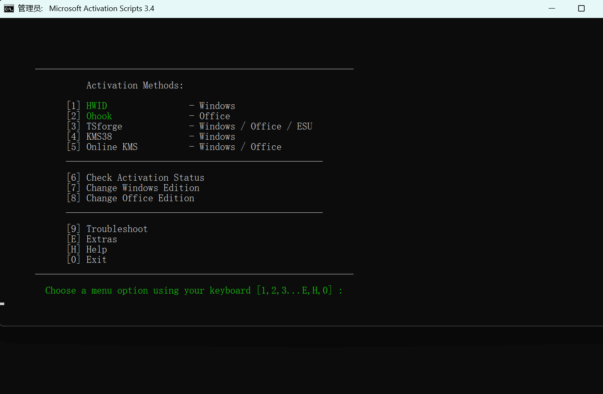
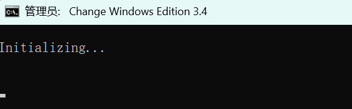
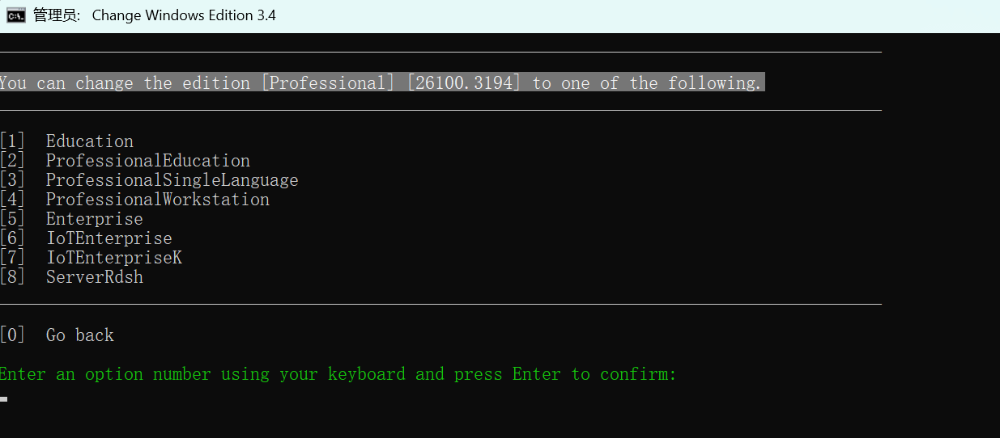
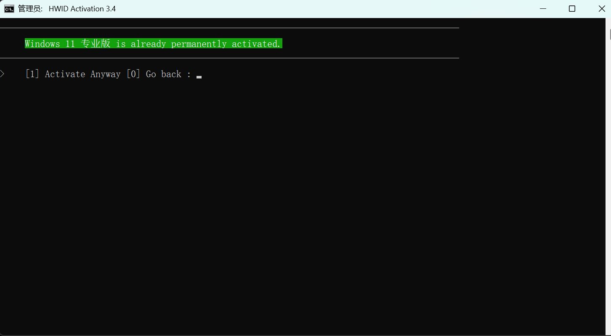

win11家庭版转换为专业版（24H2），附带激活方法
想玩虚拟机，听说windows系统有自带的虚拟机，但是我转了一圈发现自己的电脑是家庭版，没有这个功能。特此记录。
在 Windows Powershell 输入 irm https://get.activated.win | iex
注意不是cmd！！
之后是全英文界面，看着进行即可（如下图）
输入7，更改windows版本。
 输入更改到的版本前的序号，按回车，等待即可。
 但是现在我们的电脑还没有激活，也可以用上面的方法，在图二的“Activation Methods”选择激活方法即可，我用的HWID，即数字权利激活
Posted 2023-04-30 10:56 写bug的代码人
本文标签：
本文总阅读量?次
文章作者 写bug的代码人
文章链接 https://bugcoder.asia/article/023.html
声明 本博客中的所有文章均使用《署名-非商业性使用-相同方式共享 4.0 国际 (CC BY-NC-SA 4.0)》协议授权，转载需注明来源，所有代码均使用MIT开源协议